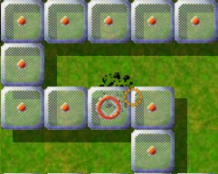
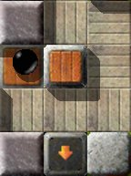

Level of the MonthEach month, we take a closer look at excellent Enigma levels. Excellent levels are those with the highest average user ratings and the greatest number of ratings altogether. Thus it is your vote that determines the Level of the Month. So please rate the levels you play and do not forget to submit your ratings together with your scores at the end of each month. You can find all previous Levels of the Month in our archive. June 2008: “Block its way!” by Jon 'WB' SneyersSince March the 26th 2008 I have to grin or even laugh each time this level crosses my way. Why? Well, quite easy—but, stop, one thing after the after.

Enigma III # 66
My first try has been quite a long time ago, and was merely a kind of naive marble pushing than a real attempt to solve the level. How did the start screen present itself to me:

Unblocked …
And so we start. Door is open, touching one of the lower impulse stones, to fill the larger water hole at least partially with wood, then through the one-way, collect the next document, it reads “Good Luck!” (My heart misgives me, but let's be optimistic …), touch the next impulse stone, open the first oxyd stone, unhurried forward, until the impulse stones places the wood stones into the water, taking another document along the way, push a wood stone into the water hole to get into the next room, and daring a look, what the bolder is supposed to do. Well, and that's it. I only see how the bolder rushes along in front of me
and parks on the trigger. Should the trigger … yes, the door is closed
again, and the level can't be solved anymore (F3 restarts the whole level.
Ouch!). By the way, I now had the time to read the last document:
“Hurry!” Uhh, who would've thought about that one?! Well then, but this time with more enthusiasm and in particular more speed, after all the level info gives a speed factor of three. I finally made it, two tries later. Sorry, that's a lie—it were definitely more (to be honest, I surely worked on it two days in a row). Either I was too slow (once again) or too careless (much too often). But with time came routine … and someday the time had come to attend to the rest of the level. And that is everything but stressful, more speed parcours: nada.

Still too late!
As next, the white marble has to be put into play, otherwise there's nothing more to do for the black one—a wood stone blocks the remaining way. Well then, let's do some 'island hopping' with the white marble—no, no need for jumping. Place wood stones between the four islands. Here everyone who has problems with the rebound of pushing stones on narrow floors should be careful; fortunately, the grass's not wet and the sand is just normal sand. After we managed this as well, the black and the white marble mutually free their paths. Open some oxyds along the way. Finally the black marble has to open a gap in a row of wood stones, to reach the remaining oxyd stones. After all oxyd stones but the last one are open, the black marble can go on its last way, to finally solve the level by touching the oxyd stone behind the one-way on the start screen. If you like “Little Puzzles” and “Big Adventures” optically and technically, you will for sure feel like home in the two rooms on the right side of “Block its way!”; after all, all three levels are penned by the same author. 
Another broken ego …
It really looks a bit walled in, the black marble, that I as a gamer have to
use. And the hint to open “the” door, sounds like a command, and when
the author wishes me “good luck”, I'll surely need it!
There I see some impulse stones, that can move many a stone, and their
“hollow” relatives, which can destroy a passing marble: Keep your
fingers on the pulse of time!
I see a yin-yang symbol beyond the “now” opened door and have a clue
to the existence of a partner, which is important for the solution: a white
marble.
So I begin to play, make my way to the yin-yang … and suddenly …
the door is … closed. Lost? Can there be another actor? “Block
its way”? … Whose way shall I block?
I switch to the white marble, free it, equip it and … for starters, build
a bridge to the main island with the oxyds. But: How can I open the door
again? Lost? And what is the bolder doing there? Maybe there are switches
… or a magic wand?
With speed, and the “right” impulse, I finally come up with a
blockade “solution” just in time: “Block its way”! Do you
have your fingers on the pulse of time?
It's a beautiful game, two marbles, two initial scenarios, and the demand to
accomplish intelligent and fast actions with time and dexterity. And to keep
the “alien” blocking actor on distance: Block its way. Only then the
door keeps open until the closing tune plays, just like the first hint reminds
us so categorically.
If you remember the first sentence of this article, you will ask yourself, what on earth is so funny with this level? Actually, nothing, if—yes, if—one plays it like described. Because there's one more variant, where one circumvents the speed parcour in the beginning (many thanks to Taztunes for the hint). So everyone who has problems with that, or are not that interested in a good time, or just want to play a nice level in a relaxed atmosphere, should do the following: Danger, spoiler ahead! Open the door with the
trigger and touch one of the surrounding impulse stones, then wait until
the door closes (the bolder now reached its trigger), then just press the
trigger a second time and the door opens up again, finished (read Taztunes'
post about “Block its way!” from March 26th 2008 on the forum
mag-heut.net).
End of spoiler Now I ask myself the question, why is the level called “Block its way!”, why should I “Hurry!”, like is written on the document, why has the level a speed factor of 3? Everything just red herrings? Is the author amused about all the gullible players like me (he might forgive me, when I alleged something wrong)? If yes, I think it's okay LOL. By all means I've willingly learned my lesson mit a smile. I always have to thing about a quote from Kurt Tucholsky on such occasions: “Never let an expert impress you when he says, 'Dear friend, I've been doing it this way for twenty years now!'—one can well do it the wrong way for twenty years.” And therefore a large 'Thank you' to Jon 'WB' Sneyers for a level which—like in my case—demonstrates the gamer's own shortsightedness. And please leave the level the way it is and don't correct it, as I, for one, would be very disappointed! [Commentary: The shortcut wasn't known to the team nor to Jon, until Taztunes advised us of it. Thus, the speed rating of three was assigned without knowledge of the shortcut.]
The level started out with the idea of the title: a race against time to block a
boulder from running into a doomed trigger. If I remember correctly, I wanted to
make it a one-screen level first, where you could see what was going to happen
from the beginning. Somehow I was using too much space for the impulse stone
routes, so the boulder path ended up just on the next screen. Then I started to
like that, because you can still see the boulder sitting there, but you don't
know immediately what it is going to do. Only after you've got to the next
screen once, you can know what needs to be done. Anyway, now I had a second
screen to fill, so I could just as well make it a somewhat larger level. I have
always liked yin-yang levels, so I decided to make it a level where first black
solves a puzzle (the blocking of the boulder, which is mostly a dexterity
challenge), then white solves a puzzle, then they both cooperate to solve the
rest of the map. For white's puzzle I tried to make a connect-the-islands
bridgebuilding puzzle where the bridges need to be in somewhat unexpected
places.
NObby Dear reader, we have a constant need for articles from you about Enigma's great levels. Please, send us any articles, even comments, you write to: enigma-devel@nongnu.org We're particularly interested in articles about the following levels:
Many thanks in advance, only your help can keep the LotM alive! Your Enigma Team |